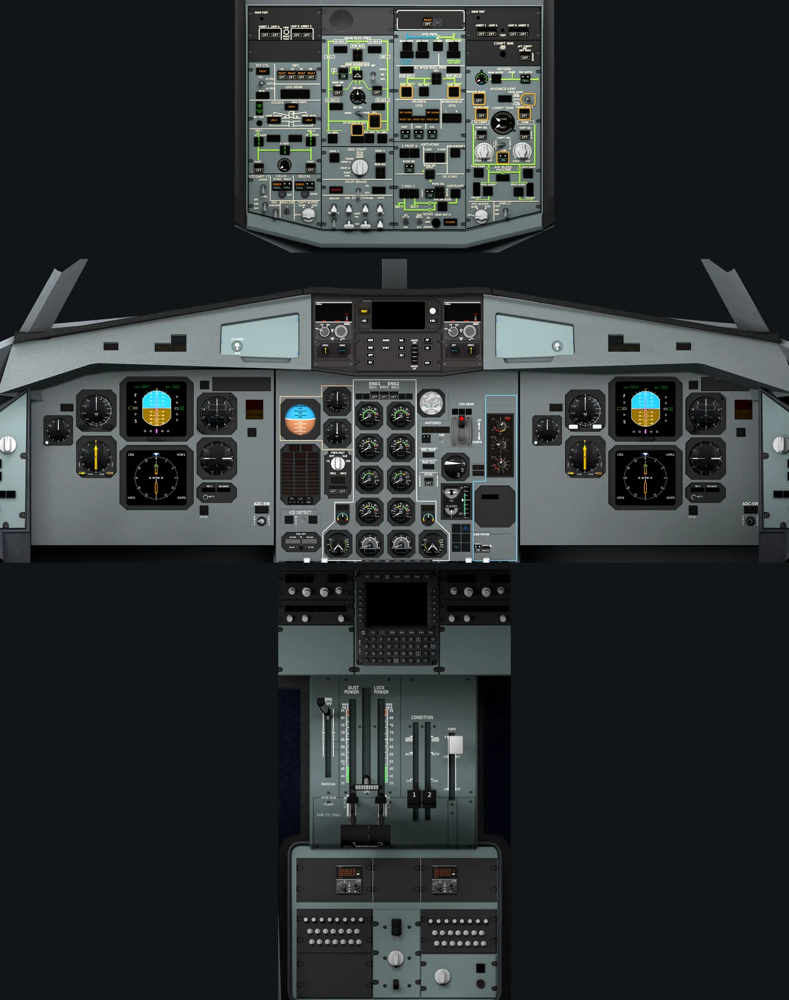

The ATR 72 flight deck: the overhead with its dark-cockpit pushbuttons, the AFCS and ADU, EADI and EHSI, the round engine gauges and the pedestal with the power levers, condition levers and the propeller brake. Bring it from cold and dark through hotel mode to the runway and fly it by hand or on the autopilot, with the power set by you: the ATR has no autothrottle.

Fly with the keyboard, a gamepad or joystick, the touch stick or this pad. The ATR has conventional controls and no autothrottle: you set the power with the power levers, and the condition levers set the propeller speed. Trim takes the force off the column; the autopilot trims by itself.
The overhead pushbuttons are dark when everything is normal: a white OFF light means a system is switched off, an amber FAULT or LO PR light a failure, a blue ON a temporary or manual selection. Before take-off the overhead should be dark.
DC is the main system: two DC generators (one on each engine), the battery and DC external power. Each engine also drives an AC wild-frequency generator for the heavy loads (de-icing, heaters). On the stand: BAT ON, DC EXT PWR ON.
START SEL to START A&B, press START 1 or 2: the starter-generator turns the engine. CL from FUEL SO to FTR: fuel and light-off, the START light goes out at the end of the start. Hotel mode: with the gust lock on, CL 2 at FTR and PL 2 at GI, PROP BRAKE ON before starting engine 2: the engine runs and powers the aircraft, the propeller stays still.
The condition levers: FUEL SO, FTR (feathered), AUTO (NP 70.8 % on the ground, 82 % in flight) and MAX RPM (100 %, for take-off and approach). The power levers: GI, FI, the NOTCH (rated power for the PWR MGT setting: TO, MCT, CLB, CRZ) and the RAMP. The torque bug shows the rated torque for the PWR MGT setting.
AP engages the autopilot with the yaw damper. HDG, NAV, APP and BANK are lateral; IAS, VS and ALT vertical, with ALT SEL armed when the selected altitude is away from the present one. The pitch wheel sets the vertical speed in VS or the speed in IAS. The ADU shows the engaged modes in green and the armed modes in white. Power is always yours.
The engines, systems and flight model are teaching models shared with the A320 and 737 trainers and tuned to typical ATR 72 numbers. The FMS is a status page; NAV follows the practice route. Ice accretion, the ATPCS uptrim and the CCAS sounds are simplified. Our own drawings of the instruments.
| W S · A D or the arrow keys | Column and wheel: nose down and up, roll left and right |
| Home End (or [ ]) | Pitch trim: nose down, nose up |
| Q E | Rudder pedals (and nose wheel steering) |
| + − · T · I · R | Power levers · into the notch · idle (GI on the ground, FI in the air) · reverse (on the ground) |
| C X | Condition levers forward and back (FUEL SO, FTR, AUTO, MAX RPM) |
| F V · G · B | Flaps down and up (0, 15, 30) · gear lever · brakes while held |
| Space · P | Autopilot disconnect · pause |
| 1 2 3 4 5 · Esc | Overhead, panel, pedestal, AFCS, engine instruments · back to the panel |
Training aid, not a certified simulator or a substitute for the aircraft's approved documents. No procedures are included: use your operator's FCOM, QRH and SOP.
Not affiliated with ATR, Pratt & Whitney Canada or any operator. The flight deck picture is rendered from the FlightGear ATR 72-500 model (GPL-3.0, see data sources); the instruments are our own drawings. Numbers are typical values for learning.